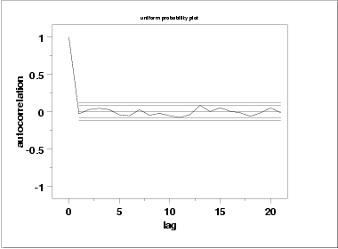

|
1.
Exploratory Data Analysis
1.4. EDA Case Studies 1.4.2. Case Studies 1.4.2.2. Uniform Random Numbers
|
|||
| Summary Statistics |
As a first step in the analysis, common summary statistics are
computed for the data.
Sample size = 500
Mean = 0.5078304
Median = 0.5183650
Minimum = 0.0024900
Maximum = 0.9970800
Range = 0.9945900
Stan. Dev. = 0.2943252
Because the graphs of the data indicate the data may not be
normally distributed, we also compute two other statistics for the data,
the normal PPCC and the uniform PPCC.
Normal PPCC = 0.9771602
Uniform PPCC = 0.9995682
The uniform
probability plot correlation
coefficient (PPCC) value is larger than the normal
PPCC value. This is evidence that the uniform distribution fits these
data better than does a normal distribution.
|
||
| Location |
One way to quantify a change in location over time is to
fit a straight line
to the data using an index variable as the independent
variable in the regression. For our data, we assume
that data are in sequential run order and that the
data were collected at equally spaced time intervals. In our regression,
we use the index variable X = 1, 2, ..., N, where N is the number
of observations. If there is no significant drift in the location
over time, the slope parameter should be zero.
Coefficient Estimate Stan. Error t-Value
B0 0.522923 0.2638E-01 19.82
B1 -0.602478E-04 0.9125E-04 -0.66
Residual Standard Deviation = 0.2944917
Residual Degrees of Freedom = 498
The t-value of the slope
parameter, -0.66, is smaller than the critical value of
t0.975,498 = 1.96. Thus, we conclude that the slope is not
different from zero at the 0.05 significance level.
|
||
| Variation |
One simple way to detect a change in variation is with a
Bartlett test after dividing the
data set into several equal-sized intervals. However, the Bartlett
test is not robust for non-normality. Since we know this data set is
not approximated well by the normal distribution,
we use the alternative Levene
test. In particular, we use the Levene test based on the median
rather the mean. The choice of the number of intervals is somewhat
arbitrary, although values of four or eight are reasonable. We will divide
our data into four intervals.
H0: σ12 = σ22 = σ32 = σ42
Ha: At least one σi2 is not equal to the others.
Test statistic: W = 0.07983
Degrees of freedom: k - 1 = 3
Significance level: α = 0.05
Critical value: Fα,k-1,N-k = 2.623
Critical region: Reject H0 if W > 2.623
In this case, the Levene test indicates that the variances are
not significantly different in the four intervals.
|
||
| Randomness |
There are many ways in which data can be non-random. However,
most common forms of non-randomness can be detected with a
few simple tests including the
lag plot shown on
the previous page.
Another check is an autocorrelation plot that shows the autocorrelations for various lags. Confidence bands can be plotted using 95% and 99% confidence levels. Points outside this band indicate statistically significant values (lag 0 is always 1).  The lag 1 autocorrelation, which is generally the one of most interest, is 0.03. The critical values at the 5 % significance level are -0.087 and 0.087. This indicates that the lag 1 autocorrelation is not statistically significant, so there is no evidence of non-randomness. A common test for randomness is the runs test.
H0: the sequence was produced in a random manner
Ha: the sequence was not produced in a random manner
Test statistic: Z = 0.2686
Significance level: α = 0.05
Critical value: Z1-α/2 = 1.96
Critical region: Reject H0 if |Z| > 1.96
The runs test fails to reject the null hypothesis that the data were
produced in a random manner.
|
||
| Distributional Analysis |
Probability plots are a
graphical test of assessing whether a particular distribution provides
an adequate fit to a data set.
A quantitative enhancement to the probability plot is the correlation coefficient of the points on the probability plot, or PPCC. For this data set the PPCC based on a normal distribution is 0.977. Since the PPCC is less than the critical value of 0.987 (this is a tabulated value), the normality assumption is rejected. Chi-square and Kolmogorov-Smirnov goodness-of-fit tests are alternative methods for assessing distributional adequacy. The Wilk-Shapiro and Anderson-Darling tests can be used to test for normality. The results of the Anderson-Darling test follow.
H0: the data are normally distributed
Ha: the data are not normally distributed
Adjusted test statistic: A2 = 5.765
Significance level: α = 0.05
Critical value: 0.787
Critical region: Reject H0 if A2 > 0.787
The Anderson-Darling test rejects the normality assumption because the
value of the test statistic, 5.765, is larger than the critical value
of 0.787 at the 0.05 significance level.
|
||
| Model |
Based on the graphical and quantitative analysis, we use the model
95% confidence limit for C = (0.497,0.503) |
||
| Univariate Report |
It is sometimes useful and convenient to summarize the above results
in a report.
Analysis for 500 uniform random numbers
1: Sample Size = 500
2: Location
Mean = 0.50783
Standard Deviation of Mean = 0.013163
95% Confidence Interval for Mean = (0.48197,0.533692)
Drift with respect to location? = NO
3: Variation
Standard Deviation = 0.294326
95% Confidence Interval for SD = (0.277144,0.313796)
Drift with respect to variation?
(based on Levene's test on quarters
of the data) = NO
4: Distribution
Normal PPCC = 0.9771602
Normal Anderson-Darling = 5.7198390
Data are Normal?
(as tested by Normal PPCC) = NO
(as tested by Anderson-Darling) = NO
Uniform PPCC = 0.9995683
Uniform Anderson-Darling = 0.9082221
Data are Uniform?
(as tested by Uniform PPCC) = YES
(as tested by Anderson-Darling) = YES
5: Randomness
Autocorrelation = -0.03099
Data are Random?
(as measured by autocorrelation) = YES
6: Statistical Control
(i.e., no drift in location or scale,
data is random, distribution is
fixed, here we are testing only for
fixed uniform)
Data Set is in Statistical Control? = YES
|
||